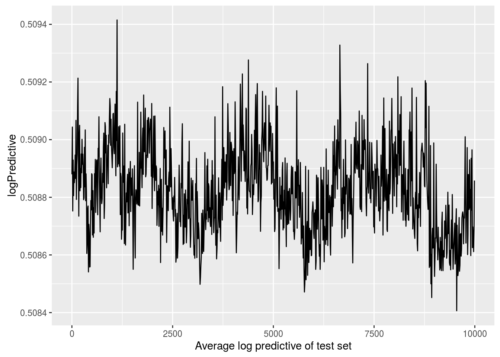

In this example we use the package to infer the bias and coefficients in a logistic regression model using stochastic gradient Langevin Dynamics with control variates. So we assume we have data \(\mathbf x_1, \dots, \mathbf x_N\) and response variables \(y_1, \dots, y_N\) with likelihood \[ p(\mathbf X, \mathbf y | \beta, \beta_0 ) = \prod_{i=1}^N \left[ \frac{1}{1+e^{-\beta_0 + \mathbf x_i \beta}} \right]^{y_i} \left[ 1 - \frac{1}{1+e^{-\beta_0 + \mathbf x_i \beta}} \right]^{1-y_i} \]
First let’s load in the data, we will use the cover type dataset commonly used to benchmark classification models. We use the dataset from LIBSVM, which transforms the problem from multiclass to binary.
library(sgmcmc)
# Load data from package
data("covertype")First we’ll remove about 10000 observations from the original dataset, this will be used to check that our algorithm did okay. Then we’ll separate out the response variable y and the explanatory variables X. The response variable is the first column in the dataset.
testObservations = sample(nrow(covertype), 10^4)
testSet = covertype[testObservations,]
X = covertype[-c(testObservations),2:ncol(covertype)]
y = covertype[-c(testObservations),1]
dataset = list( "X" = X, "y" = y )In the last line we defined the dataset as it will be input to the relevant sgmcmc function. A lot of the inputs to functions in sgmcmc are defined as lists. This improves flexibility by enabling models to be specified with multiple parameters, datasets and allows separate tuning constants to be set for each parameter. We assume that observations are always accessed on the first dimension of each object, i.e. the point \(x_i\) is located at X[i,] rather than X[,i]. Similarly the observation \(i\) from a 3d object Y would be located at Y[i,,].
Now we want to set the starting values and shapes for our parameters. We can see from the likelihood equation we have two parameters, the bias \(\beta_0\) and the coefficients \(\beta\). We’ll just set these to start from zero. Similar to the data, these are just a list with the relevant names.
# Get the dimension of X, needed to set shape of params$beta
d = ncol(dataset$X)
params = list( "bias" = 0, "beta" = matrix( rep( 0, d ), nrow = d ) )Now we’ll define the functions logLik and logPrior. It should now become clear why the list names come in handy. The function logLik should take two parameters as input: params and dataset. These parameters will be lists with the same names as those you defined for params and dataset earlier. There is one difference though, the objects in the lists will have automatically been converted to TensorFlow objects for you. The params list will contain TensorFlow tensor variables; the dataset list will contain TensorFlow placeholders. The logLik function should take these lists as input and return the value of the log likelihood as a tensor at point params given data dataset. The function should do this using TensorFlow operations, as this allows the gradient to be automatically calculated; it also allows the wide range of distribution objects as well as matrix operations that TensorFlow provides to be taken advantage of. A tutorial of TensorFlow for R is beyond the scope of this article, for more details we refer the reader to the website of TensorFlow for R. With this in place we can define the logLik function as follows
logLik = function(params, dataset) {
yEstimated = 1 / (1 + tf$exp( - tf$squeeze(params$bias + tf$matmul(dataset$X, params$beta))))
logLik = tf$reduce_sum(dataset$y * tf$log(yEstimated) + (1 - dataset$y) * tf$log(1 - yEstimated))
return(logLik)
}R does not play nicely with the tensorflow type system, so make sure you set all your constants in the logLik and logPrior functions to tf$float32. Otherwise you will encounter an error.
Next we want to define our log prior, we assume each \(\beta_i\) have independent prior Laplace distribution, so that \(\log p( \beta ) = - \sum_{i=0}^d | \beta_i|\). Similar to the log likelihood definition, the log prior is defined as a function with input params. In our case the definition is
logPrior = function(params) {
logPrior = - (tf$reduce_sum(tf$abs(params$beta)) + tf$reduce_sum(tf$abs(params$bias)))
return(logPrior)
}Again make sure you set all your constants inside the function to tf$float32.
Finally we’ll set the stepsize parameters for the algorithm, along with the minibatch size. sgldcv relies on two stepsize parameters, one for the optimization step and one for the MCMC step. The values of the optimization and MCMC stepsizes will generally be quite similar. To allow stepsizes to be set for different parameters, the form of the stepsizes for the MCMC will be lists with names corresponding to each of the names in params. The optimization step will just be one value as the stepsize is automatically tuned
stepsizesMCMC = list("beta" = 2e-5, "bias" = 2e-5)
stepsizesOptimization = 1e-1
# Set minibatch size
n = 500Now we can run our SGLD-CV algorithm using the function sgldcv from the sgmcmc package, which returns a list of Markov chains for each parameter as output. Use the argument verbose = FALSE to hide the output of the function.
output = sgldcv(logLik, logPrior, dataset, params, stepsizesMCMC, stepsizesOptimization, n, nIters = 1.1e4, verbose = FALSE)To check the algorithm converged, we’ll plot the average log predictive density of the data from our test set every 10 iterations. Let \[\hat \pi_i^{(j)} := \frac{1}{1 + \exp\left[-\beta_0^{(j)} - \mathbb x_i \beta^{(j)}\right]},\] here \(\hat \pi_i^{(j)}\) denotes the probability that the \(j^{\text{th}}\) iteration of our MCMC chain assigned to observation \(i\) in our test set. Define our test set by \(T\), the average log predictive is given by \[A := \frac{1}{|T|} \sum_{y_i \in T} \left[ y_i \log \hat \pi_i^{(j)} + (1 - y_i) \log(1 - \hat \pi_i^{(j)}) \right]\]
To check convergence, we’ll plot the average log predictive every 10 iterations as follows
yTest = testSet[,1]
XTest = testSet[,2:ncol(testSet)]
# Remove burn-in
output$bias = output$bias[-c(1:1000)]
output$beta = output$beta[-c(1:1000),,]
iterations = seq(from = 1, to = 10^4, by = 10)
avLogPred = rep(0, length(iterations))
# Calculate log predictive every 10 iterations
for ( iter in 1:length(iterations) ) {
j = iterations[iter]
# Get parameters at iteration j
beta0_j = output$bias[j]
beta_j = output$beta[j,]
for ( i in 1:length(yTest) ) {
pihat_ij = 1 / (1 + exp(- beta0_j - sum(XTest[i,] * beta_j)))
y_i = yTest[i]
# Calculate log predictive at current test set point
LogPred_curr = - (y_i * log(pihat_ij) + (1 - y_i) * log(1 - pihat_ij))
avLogPred[iter] = avLogPred[iter] + 1 / length(yTest) * LogPred_curr
}
}
library(ggplot2)
plotFrame = data.frame("iteration" = iterations, "logPredictive" = avLogPred)
ggplot(plotFrame, aes(x = iteration, y = logPredictive)) +
geom_line() +
xlab("Average log predictive of test set")